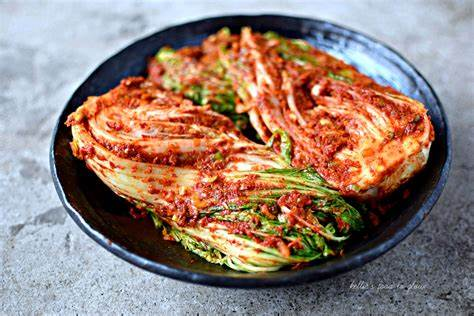
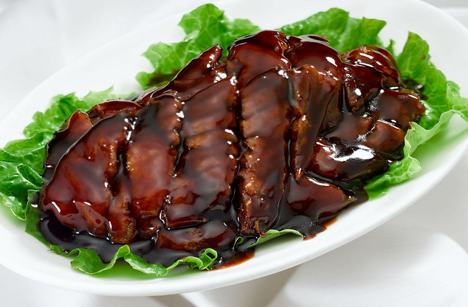
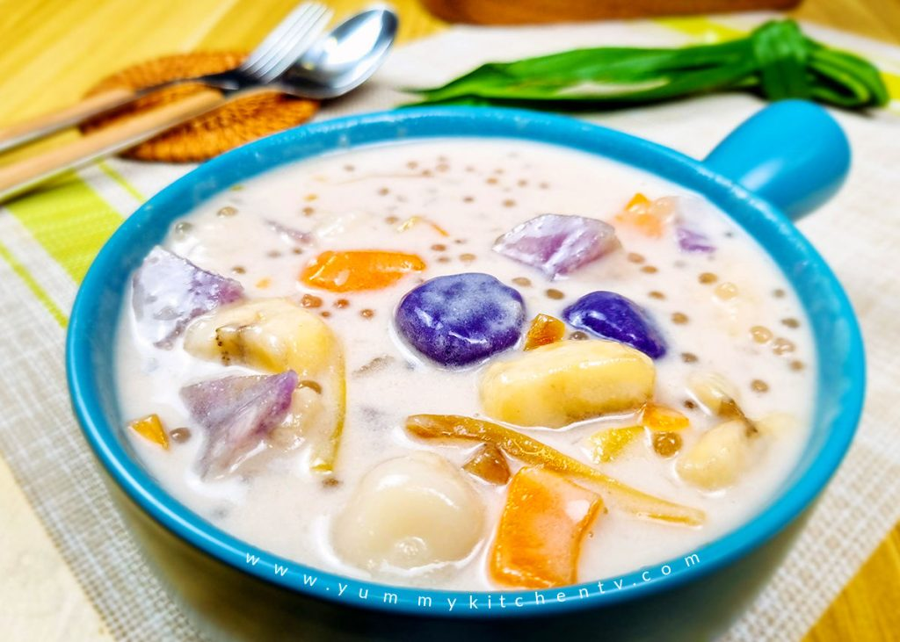
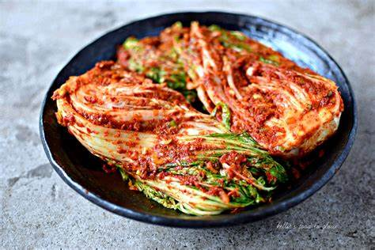
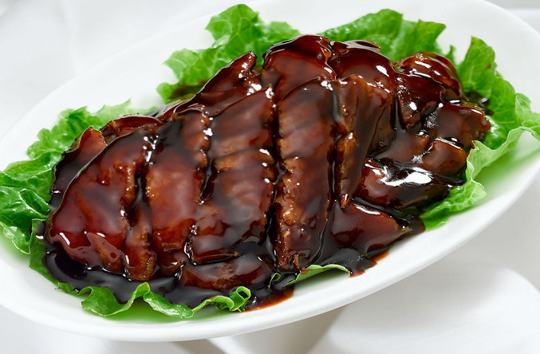
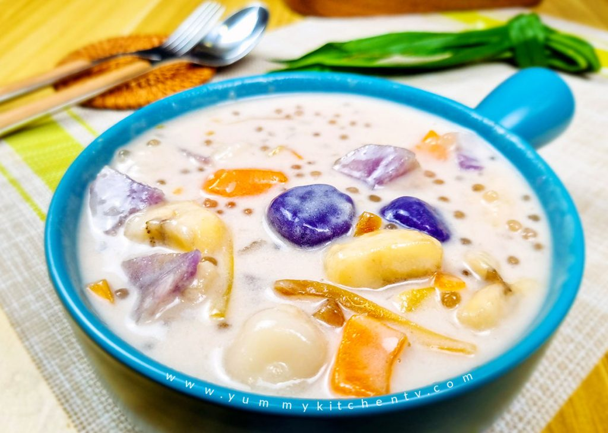

Why India Has Vast Food Varieties
India's rich culinary tapestry is a reflection of its diverse culture, history, and geography. The country's vast and varied landscape has given rise to a multitude of ingredients, spices, and cooking techniques. Each region boasts its unique dishes, influenced by local traditions, climate, and available produce. The blending of flavors, aromas, and textures in Indian cuisine is an art form that has been perfected over centuries. From the fiery curries of the north to the coconut-infused delicacies of the south, India's food offerings are a celebration of diversity and a testament to the country's vibrant heritage.
 




